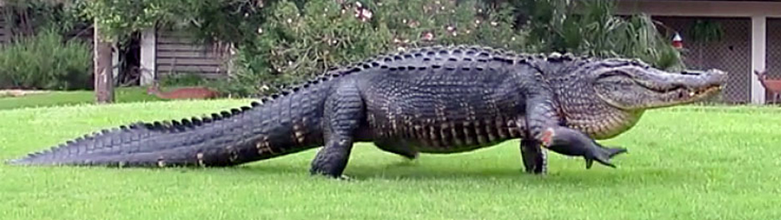
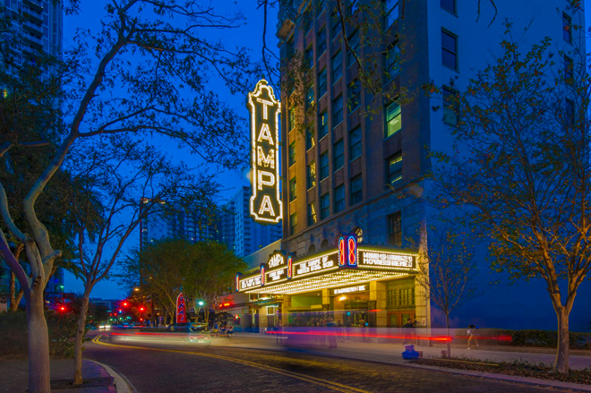
Arriving in Tampa, we visited the historic Tampa Film Theatre and watched Atom Egoyan's The Sweet Hereafter with Ian Holm, an art film unusual for a venue such as this.
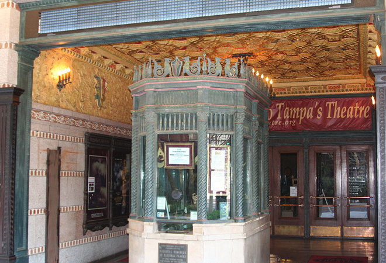
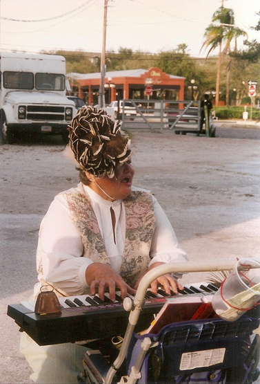
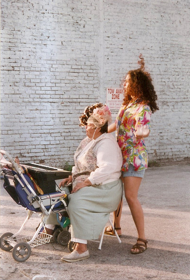
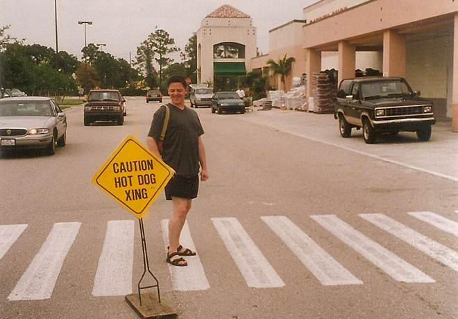
Created in 1947 by stunt swimmer and attraction promoter Newt Perry, who based the show on underwater air-hose breathing techniques, "Weeki Wachee Springs" was first named by Seminole Indians, which means 'Little Spring' or 'Winding River' in their language.
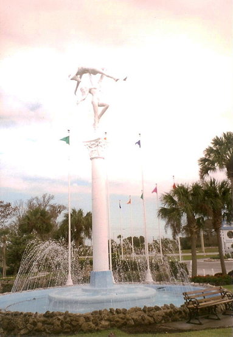
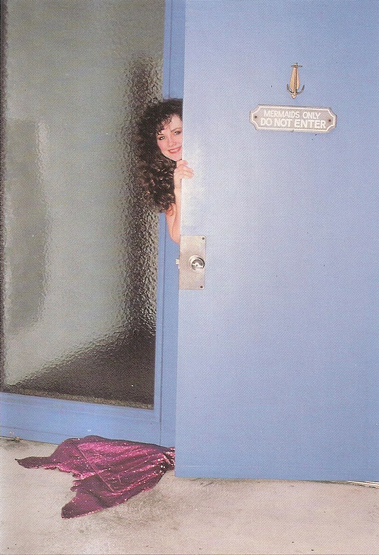
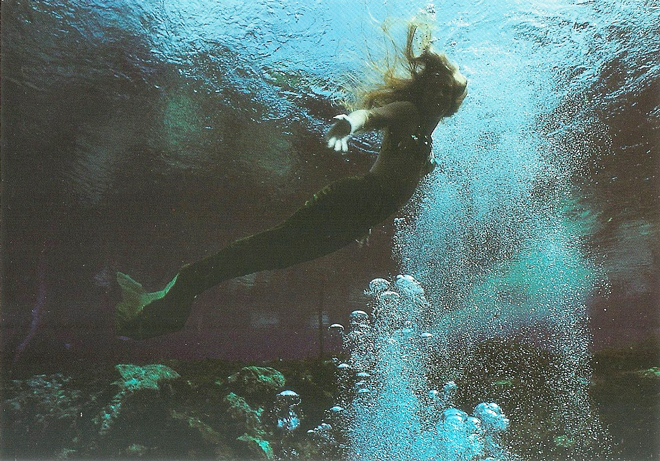
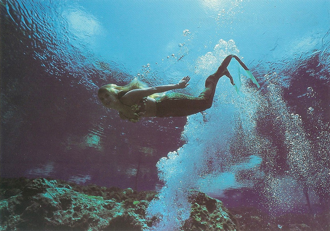
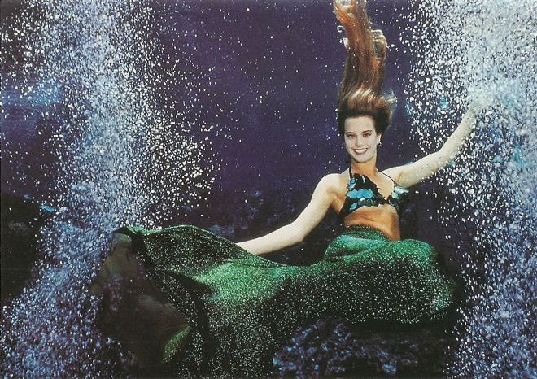
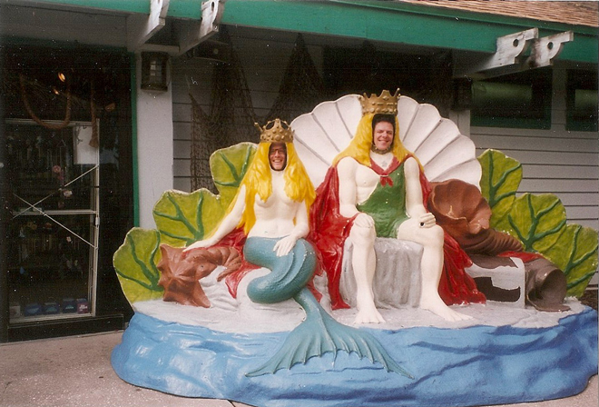
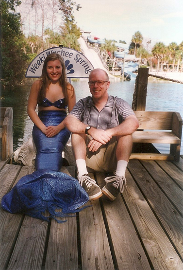
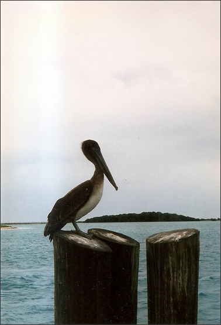
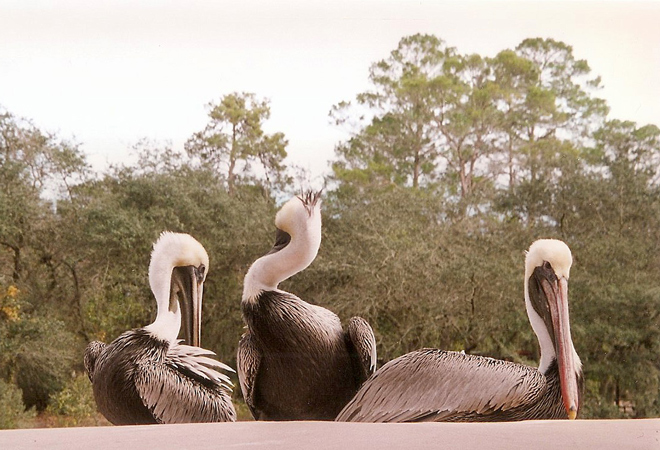
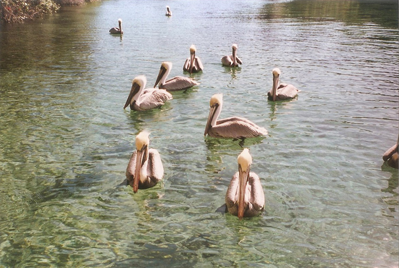
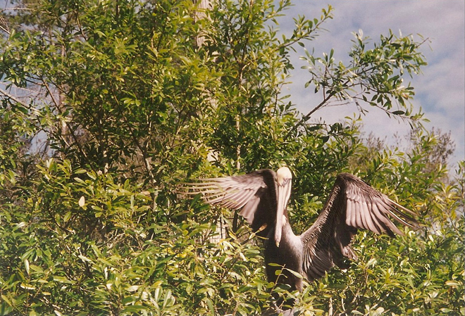
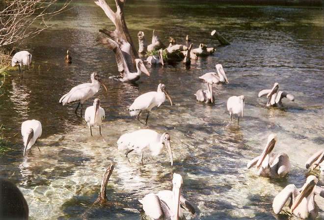
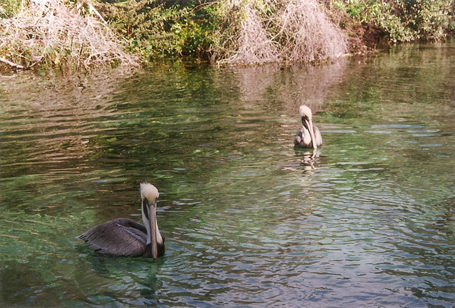